プレスキット
記事・動画・配信での紹介に、ここにある画像・GIF・動画を自由にお使いください（トリミング・縮小も可）。掲載いただいた際は、ご一報いただけると助かります。
紹介文
ひとことで好きな言葉を札に書くと、その言葉に宿る霊獣が目覚める。言霊召喚×和風3Dサバイバーアクション『電獣（でんじゅう）』。
くわしく
『電獣』は、夜の街の電線に眠る霊獣「電獣」を喚び、街にあふれる怪異「ノイズ」を祓う、iPhone 向けの和風3Dサバイバーアクションです。好きな言葉を札に書くと、その言葉に宿る電獣が目覚める「言霊召喚」が最大の特徴。同じ言葉からは、だれが書いても同じ電獣が現れます。
戦闘は指一本。ドラッグで動き、技は自動で発動します。強化を選んで技を「覚醒」させ、画面を雷で埋めつくしながら、10の区と、雷神・大百足・大禍津日神など10体の大禍（ボス）に挑みます。1回3分前後で遊べます。
特徴
- 言霊召喚 好きな言葉が、そのまま電獣になる。自分の名前、推しの名前、今日の晩ごはん。毎日みんなに同じ「今日の言霊」も出る。
- 25種×4階級と色違い 狐・狼・麒麟・龍・鳳×5属性、並・良・稀・神。位が上がるほど注連縄や冠をまとい、神の狐は九尾に。まれに特別な色の色違いも。
- 指一本で百鬼夜行を祓う 技は自動。3択の強化で技を覚醒させ、ゲージが満ちたら必殺の封印解放。
- 百鬼夜行 毎週かわる区と異変で、大禍が次々に現れる夜をどこまで生きのびられるか。全員おなじ条件で、Game Center のランキングとフレンドチャレンジも。
- なでて、育てて、昇格 拠点でなでると「なかよし」が上がる。Lv30・なかよし最大で昇格し、子どもの姿から凛々しい姿へ。
製品情報
| タイトル | 電獣（でんじゅう） 英題：DENJU |
|---|---|
| ジャンル | 言霊召喚×和風3Dサバイバーアクション |
| 対応機種 | iPhone（iOS 15.0 以降） |
| 価格 | 基本無料（アイテム課金あり） |
| 配信日 | 2026年10月（予定） |
| 言語 | 日本語（英語版は近日） |
| 配信地域 | 日本 |
| ボリューム | 25種×4階級の電獣、10の区と10体の大禍、週替わりの百鬼夜行、Game Center の実績28 |
| 開発・運営 | サン楽（日本の個人ゲーム開発者） |
| 公式サイト | https://mtddzd5vw2-gif.github.io/ |
| App Store | 配信開始後に掲載 |
| お問い合わせ | wakahisamk@gmail.com |
キービジュアル
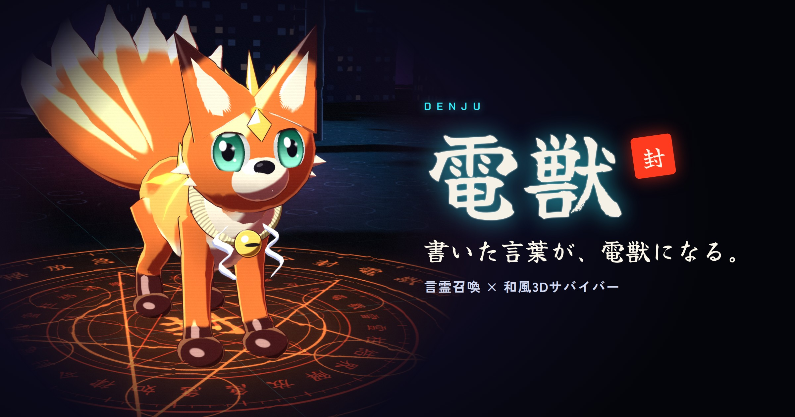
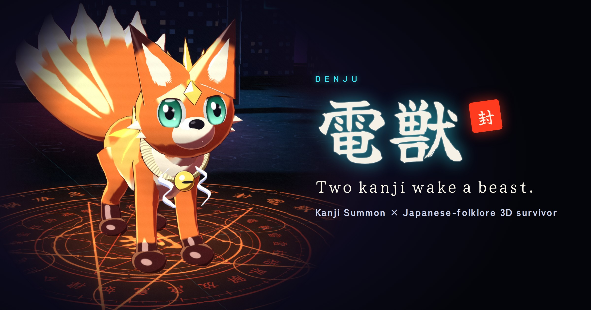
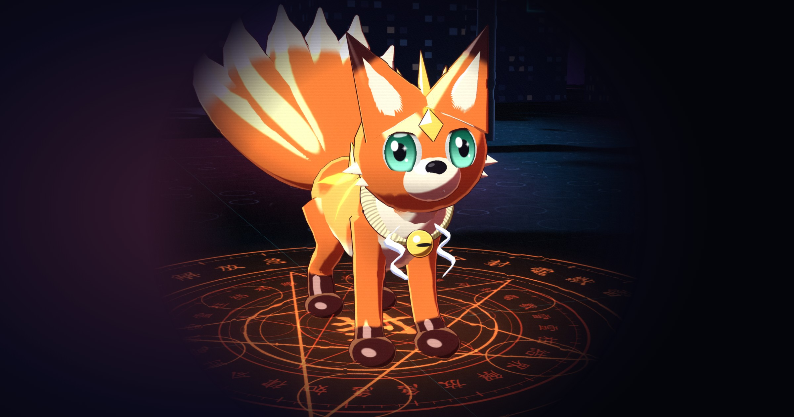
ロゴとアイコン
GIF
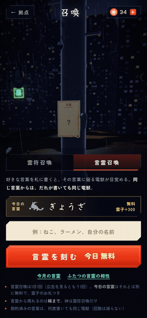
GIF 5.5 MBMP4 2.3 MB
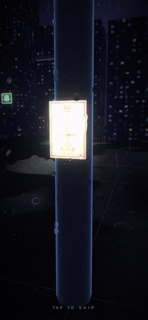
GIF 6.3 MBMP4 2.8 MB
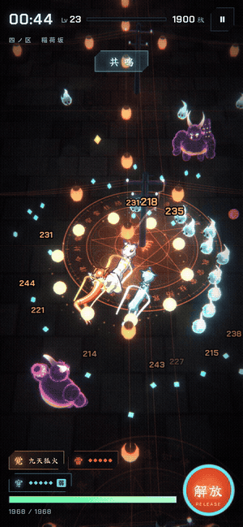
GIF 5.3 MBMP4 2.8 MB
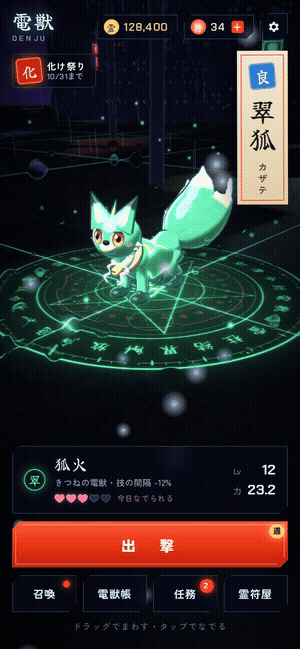
GIF 3.3 MBMP4 0.6 MB
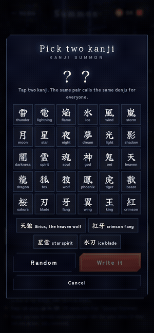
GIF 4.4 MBMP4 2.3 MB
動画
MP4 14 MB
MP4 6.6 MB
GIF と同じ場面の MP4（600 × 1298・30fps、場面の全体）は、GIF の下のリンクから保存できます。
スクリーンショット
1320 × 2868 の JPG。タップで原寸。
日本語版


英語版

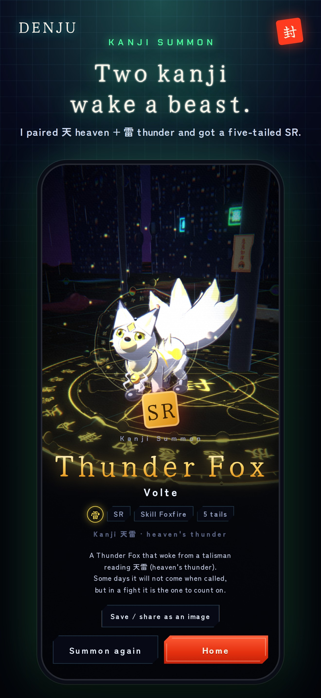

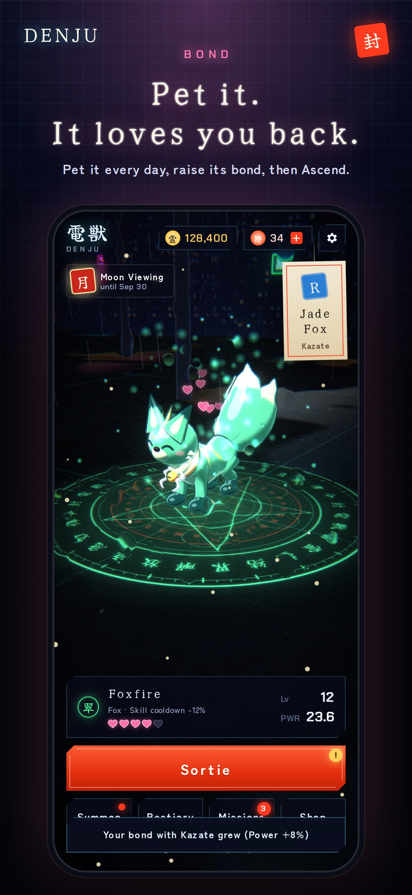

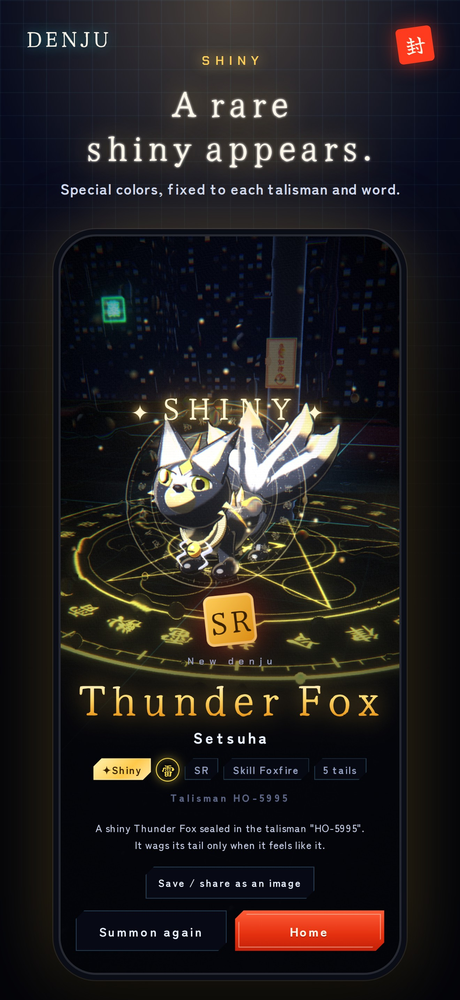


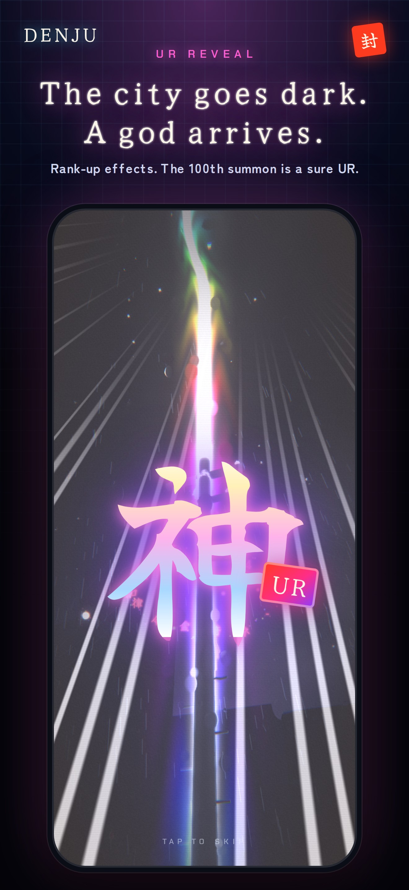

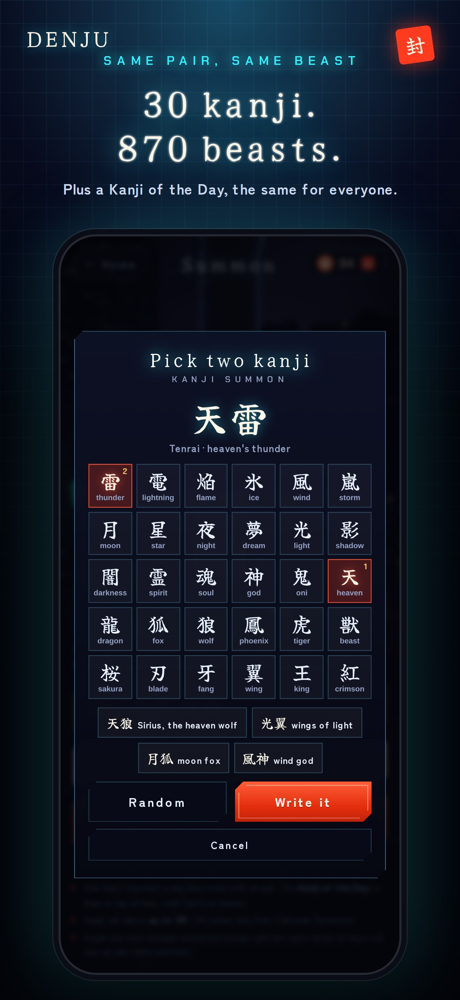

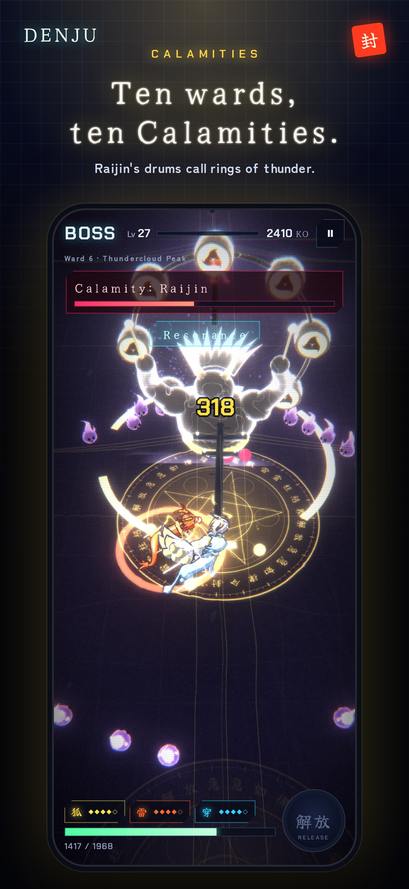

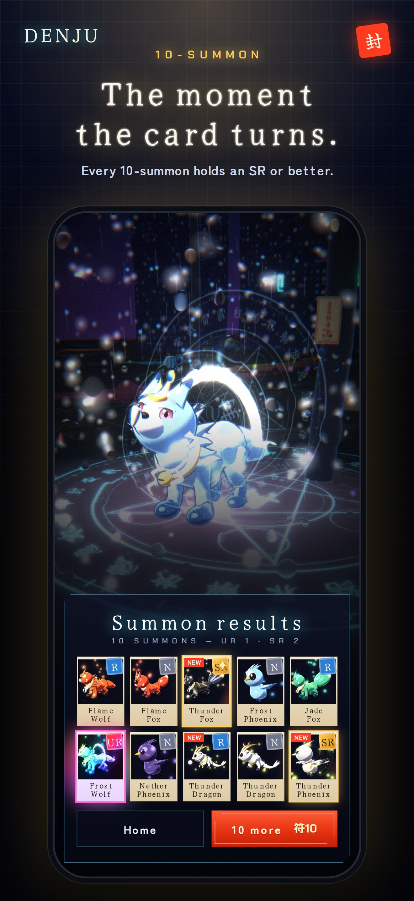

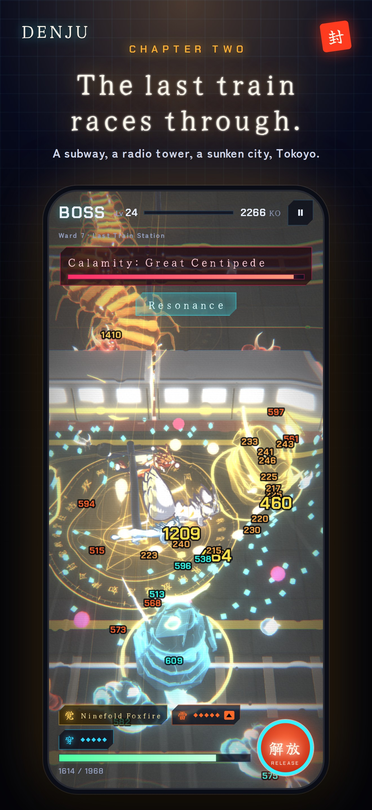

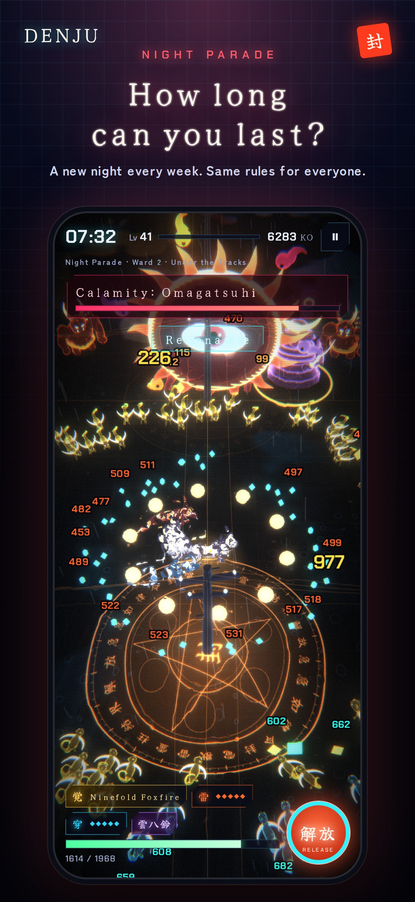
お問い合わせ
サン楽（日本の個人ゲーム開発者）
メール: wakahisamk@gmail.com
公式サイト: https://mtddzd5vw2-gif.github.io/